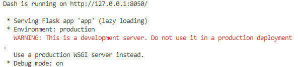
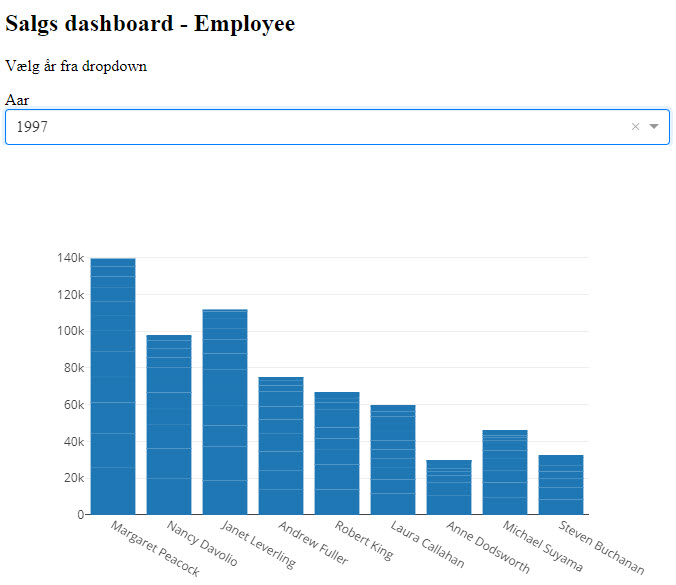

Dash
Contents
Dash¶
Dash er et open source Python framework, der bruges til at bygge webapplikationer.
Det er et framewwork, der forenkler udviklingen af datadrevne applikationer. Du kan oprette fantastiske dashboards der afvikles i din browser ved hjælp af Dash. Det er også muligt at sende en Dash applikation over til Azure så alle har adgang.
Dash er bygget på Plotly.js, React og Flask, hvilket binder moderne brugergrænseflade elementer som dropdowns, slicer og grafer direkte til din Python kode.
Dash-apps består af en Flask-server, der kommunikerer med front-end React-komponenter ved hjælp af JSON-pakker over HTTP-anmodninger.
Dash-applikationer er udelukkende skrevet i python, så ingen HTML eller JavaScript er nødvendig.
Demo¶
På dette seminar har vi ikke mulighed for at gå ind i de mange muligheder der er med Dash, men du får en demo af hvad der er muligt.
Fil struktur¶
Du skal bruge følgende filer, der alle skal være i sammen mappe.
config.ini
requirements.txt
app.py¶
Denne Python fil er kode filen, det er her al koden for at oprette Dash og de forskellige elementer er oprettet.
# ***************************************
# Imports
# ***************************************
# Dash
import dash
from dash import html
from dash import dcc
from dash.dependencies import Input, Output
# Plotly
import plotly.express as px
import plotly.graph_objects as go
# ***************************************
# Get data
# ***************************************
import datamodel
df_employees_sale = datamodel.get_data()
df_year = datamodel.get_year()
# ***************************************
# Diagram - Employee Sales
# ***************************************
fig_employee = px.bar(df_employees_sale,
x='Employee', y='Total', barmode='group',
color='Employee', title='Sales by Employee')
# ***************************************
# Activate the app
# ***************************************
#app = dash.Dash(__name__)
dash_app = dash.Dash(__name__)
app = dash_app.server
# ***************************************
# Layout
# ***************************************
dash_app.layout = html.Div(
children=[
html.Div(className='row',
children=[
html.Div(className='four columns div-user-controls',
children=[
html.H2('Salgs dashboard - Employee'),
html.P('Vælg år fra dropdown'),
html.Div(children="Aar", className="menu-title"),
dcc.Dropdown(
id='drop_year',
options=[{'label':selectyear, 'value':selectyear} for selectyear in df_year['order_year']]
),
]
),
html.Div(className='eight columns div-for-charts bg-grey',
children=[
dcc.Graph(id="sales_employee", figure=fig_employee)
]
),
]
)
]
)
# ***************************************
# Callbacks
# ***************************************
# Output er Diagrammet
# Input er DropDown
@dash_app.callback(Output('sales_employee', 'figure'),
[Input('drop_year', 'value')])
def update_graph(drop_year):
order_fig1 = df_employees_sale.loc[(df_employees_sale['order_year'] == drop_year)]
return {'data':[go.Bar(
x = order_fig1['Employee'],
y = order_fig1['Total']
)
]
}
# ***************************************
# Run the app
# ***************************************
if __name__ == '__main__':
dash_app.run_server(debug=True)
datamodel.py¶
Forbindelsen til databasen (MySQL) og alt vedrørende henting af data er placeret i datamodel.py.
datamodel bliver importeret ind i app.py
# ***************************************
# Imports
# ***************************************
import pandas as pd
from sqlalchemy import create_engine, exc
import configparser
# ***************************************
# Import af datamodel Mysql
# ***************************************
# MySQL connection
def connect():
db_conn = None
try:
# Read config.ini file
config = configparser.ConfigParser()
config.read('config.ini')
# Connect to MySQL
db_connection_str = config['mysqlini']['conn_string']
db_conn = create_engine(db_connection_str)
return db_conn
except exc.SQLAlchemyError as e:
print(e)
finally:
db_conn.dispose() # Close connection
# EmployeesSale
def get_data():
conn = connect()
EmployeesSale = pd.read_sql('SELECT * FROM EmployeesSale', conn)
return EmployeesSale
def get_year():
# Year - Opret dataframe med år
conn = connect()
df_year = pd.read_sql('SELECT DISTINCT order_year FROM EmployeesSale;', conn)
return df_year
config.ini¶
Denne fil indeholder informationer omkring forbindelsen til MySQL Serveren. Der indeholder fortrolige oplysninger, derfor bliver den ikke overført til GitHub.
De informationer der skal bruges for at teste vil blive udleveret på seminaret og vil ikke virke efterfølgende.
[mysqlini]
conn_string = mysql://<username>:<password>/?@ida-database.mysql.database.azure.com:3306/northwind
requirements.txt¶
Bruges til installation af de nødvendige moduler. I et Virtuel Environment kan denne fil afvikles med kommandoen
pip3 install -r requirements.txt
som vil installere alle moduler der er listet i filen.
dash==2.0.0
dash-bootstrap-components==1.0.2
dash-core-components==2.0.0
dash-extensions==0.0.66
dash-html-components==2.0.0
dash-table==5.0.0
pandas==1.3.5
plotly==5.4.0
mysql-connector-python
sqlalchemy
mysqlclient
Afvikling¶
Når du kører app.py, vil der blive startet en Flask server på http://127.0.0.1:8050

Når du tilgår denne url, vil du have adgang til dashboard.

Du stopper Flask serveren ved at trykke CTRL + C i terminalen.